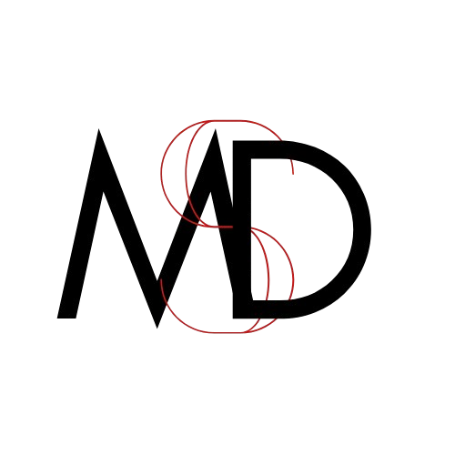

Hello, I am a rising sophomore Computer Science student at Drexel University.
This website is designed to be a showcase of accumulated web design skills, theory, and practice.
Additionally, I hope it can serve as a center of information about me.
I believe curiosity is one of the most powerful qualities we can cultivate. Time spent learning is never wasted, as long as it contributes to the growing stockpile of knowledge we build throughout our lives. As students, regardless of discipline, our ultimate goal is to expand our understanding and skills. Regardless of the motivations, at the heart of the experience lies that desire to learn. Ideally, a passion we can all share. My goal, and hopefully yours as well, is to nurture that drive for knowledge and growth. Whether it’s following a passing curiosity down a rabbit hole, pursuing a trade, beginning an apprenticeship, or attending university, any sincere pursuit of learning—despite its challenges—is worth feeding.
The important thing is not to stop questioning. Curiosity has its own reason for existence. One cannot help but be in awe when he contemplates the mysteries of eternity, of life, of the marvelous structure of reality. It is enough if one tries merely to comprehend a little of this mystery every day. Never lose a holy curiosity.
-Albert Einstein (Life magazine, p. 64, May 02, 1955.)